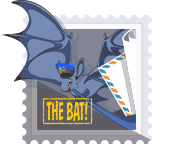
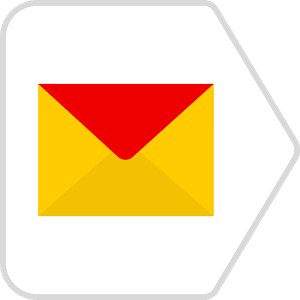
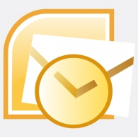
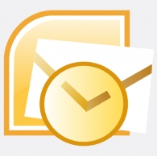
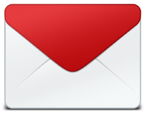
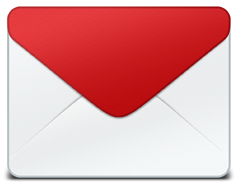
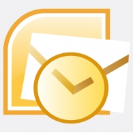
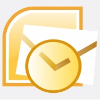

Рынок почтовых клиентов


 

 


Рейтинг


<!DOCTYPE HTML PUBLIC "-//W3C//DTD HTML 4.0 Transitional//EN">
<meta http-equiv="Content-Type" content="text/html; charset=utf-8">
<table cellpadding="0" cellspacing="0" style="margin: 0; padding: 0; border-collapse: collapse;">
title для Android<div id="mailsub"> от отступов в Mail.rudivов (в outlook'е лишние отступы)img, без areamapbackground (не в outlook*)* только background-image для body или так, так или так
без background-position и без background-repeat
width: 100%border: 0line-height: 0<img src"..."></td>color: #DDD, ДА: color: #dddddd•)[class="block"] {...}, а не .block {...}:before, :after и т.п.).title + .body) с размером шрифта или gif'кой 5px<p>, <div> и <a>)font-family: Arial, Helvetica, sans-serif;
font-family: 'Arial Black', Gadget, sans-serif;
font-family: Georgia, serif;
font-family: 'MS Sans Serif', Geneva, sans-serif;
font-family: 'MS Serif', 'New York', sans-serif;
font-family: Tahoma, Geneva, sans-serif;
font-family: 'Times New Roman', Times, serif;
font-family: 'Trebuchet MS', Helvetica, sans-serif;
font-family: Verdana, Geneva, sans-serif;
imglabel должны быть всегда сверхуtext-size-adjust: 100% для iPhone<meta name="viewport" content="width=device-width, user-scalable=no" />
max-width: 100%; height: autoИзмененяй состояния при наведении и фокусе, без JS
.content {
display: none;
}
.title:hover + .content {
display: block;
}
target="_blank" ссылкампример: newsletter
пример: email
пример: cats-lecture
пример: cats
пример: header
https://fogrew.site/?utm_source=newsletter&utm_medium=email&utm_campaign=cats-lecture&utm_content=header&utm_term=cats